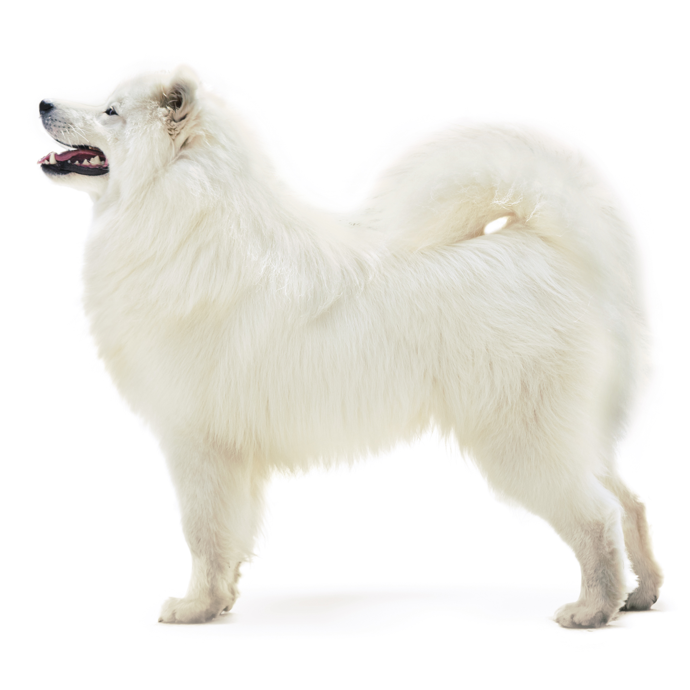

Цікаві факти про собак
Собака друг людини. Дійсно, ця тварина протягом тисячоліть живе пліч-о-пліч з людиною і є вірним супутником для багатьох з нас. Розглянемо деякі цікаві факти про собак.
Собаки здатні розрізняти кольори. Їх світ не є чорно-білим. Однак їх колірна гамма не така широка, як у людини. Собаки - дуже гарячі тварини, середня температура тіла 38,3 -39,4. На жаль, ця температура комфортна для бліх, у зв'язку з чим важливо час від часу перевіряти вашого вихованця на наявність паразитів. У собак дуже розвинена здатність до сприйняття запахів. Вони відчувають аромати в тисячі разів краще людини. Шум грози часто викликає біль у вухах собаки. Якщо ви бачите, що ваш вихованець злякався грози, насправді це може бути реакція на біль у вухах. Чи знаєте ви, що собаки не пітніють через шкіру? Їх піт виходить назовні через подушечки лап і швидке дихання. Рівень інтелекту собаки такий же, як у дворічної дитини.
Собаки здатні запам'ятати понад 250 слів і жестів, вони можуть рахувати до 5 і вирішувати найпростіші математичні завдання. Собаки не люблять, коли їх обіймають і гладять по голові - це вважається ознакою домінування. Якщо хочете приголубити собаку, погладьте їй бік. У США розташована єдина у світі церква для собак. Її побудував в XIX столітті художник Стефан Ханеке в знак подяки своїм п'яти лабрадорам, які допомогли йому перемогти важку хворобу. Собачий сміх таке ж природне і часте явище, як і людський. Собаки сміються також, як люди, тільки замість «ха-ха» вони вимовляють «х-х». Найчастіше наші вихованці сміються під час гри та при зустрічі з господарем. Шоколад є отрутою для собак. У ньому містяться речовини, які викликають ураження її центральної нервової системи.
Собаки можуть розрізняти ультразвуковий свист. Дізнавшись про це, Пол Маккартні вставив цей звук в одну з пісень спеціально для свого собаки. У світі налічується 703 породи собак. Власники собак рухаються на 66% більше, ніж інші люди. В Ірані забороняється тримати собак в якості домашніх тварин, як заведено у нас. Виняток становлять собака-мисливець і собака-охоронець житла. Кожен десятий день ацтеки та індіанці племен майя присвячували собакам. Першими собаками (у звичному для нас розумінні) були приручені вовки. Собаки з довгим тілом та короткими лапами, такси, були виведені для полювання за борсуками. Цілих 18 видів різноманітних м'язів керують вухами собаки.

Потапенко Олександр
Я дуже радий, що розповів вам про цих цікавих тварин. Я вважаю, що тварини – це наші друзі. У мене в квартирі живе кіт Барсик, ми всією сім’єю його дуже любимо. Коли він був маленьким, він був дуже жвавим, ми не могли за ним встежити. Зараз він виріс і став красивим, пухнастим котом. Колір шерсті у Барсика рудий, очі зелені. Я доглядаю за ним: годую його, граю з ним. Він любить точити кігті об наш диван, за що мама завжди кричить на Барсика, але потім вона заспокоюється і знову гладить його. А взагалі наш рудий друг слухняний. Я дуже люблю свого зеленоокого кота – Барсика, він частина моєї родини.